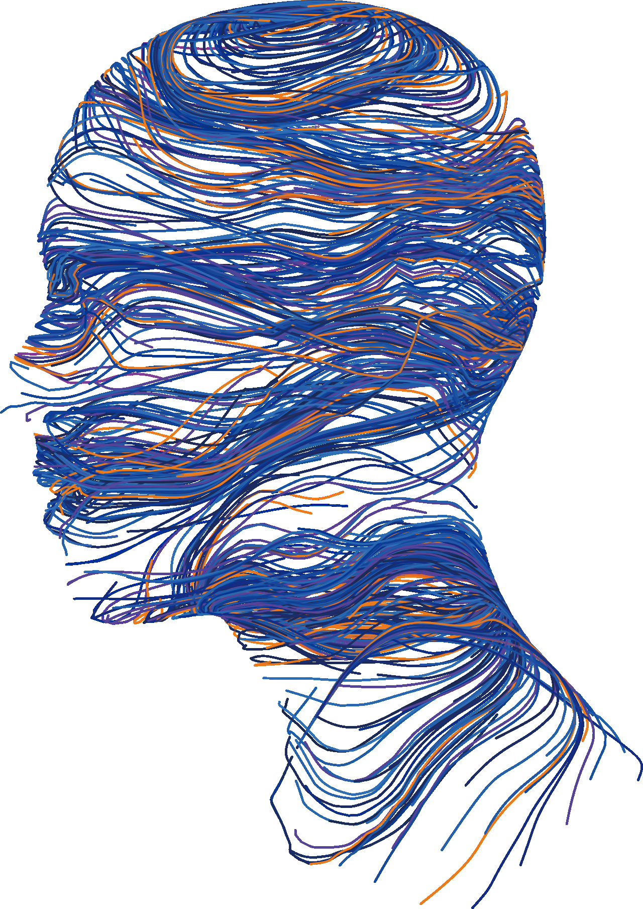
AI와 함께 만드는 평가문항:
생성부터 검토까지
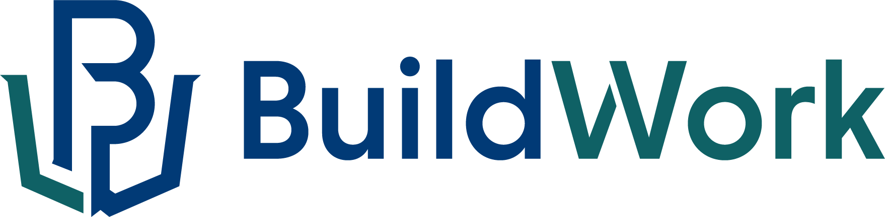
AI로 일을 더 쉽게, 더 잘하게
가치 있는 일에 집중하도록 설계합니다.
- 경력
- 현) BuildWork 대표전) 그린아트컴퓨터아트학원 정보기술개발 직업훈련교사
- 프로젝트
- (데이터총괄) AI 디지털 교육자료(AIDT) 효과성 연구(정보기술개발분석) AI·빅데이터 기반 직업훈련기관 프로파일링 및 성과편차 분석체계 고도화 방안 연구(IR 개선) 대학교육 통합성과관리체계를 위한 대학 IR 시스템 개선 연구
- 자문
- (AI자문) AI 기반 NCS 및 SQF 개발·개선 체계 구축 연구용역(분석자문)고교교육과정 변화에 따른 2028학년도 대학입학전형 개발 연구(분석자문) 직업계고 채용연계형 직무교육과정 취업 성과창출 및 유지 방안 연구(과정개발) (HRD교육팀)직업능력개발훈련교사 역량기반 교직훈련과정 개편 방안 연구STEP 위키 정보기술개발 분야 전문가 칼럼니스트
- 학력
- 한국기술교육대학교 컴퓨터공학부한국기술교육대학교 테크노인력개발대학원 인력개발 석사한국기술교육대학교 컴퓨터공학부 박사과정 재학중
AI와 함께 만드는 평가문항: 생성부터 검토까지
본 특강은 교육평가에서 생성형 AI의 활용 가능성과 한계를 이해하고, 지필평가 문항의 생성과 검토에 AI를 활용하는 방법을 살펴보는 과정이다. 먼저 재현성과 환각 같은 생성형 AI의 한계를 짚고, 프롬프트·컨텍스트·하네스·루프 엔지니어링으로 이어지는 AI 활용 방식의 변화를 알아본다. 이후 Gemini 스킬을 활용하여 학습자료를 바탕으로 간단한 평가문항을 생성하고, 내용의 정확성, 학습목표와의 부합성, 질문과 정답의 명확성을 검토하는 실습을 진행한다. 이를 통해 AI가 생성한 문항을 교육적 관점에서 판단하고 개선하는 경험을 제공한다.
학습목표
- 생성형 AI의 한계를 설명할 수 있다.
- 프롬프트·컨텍스트·하네스·루프 엔지니어링의 차이를 설명할 수 있다.
- 생성형 AI 도구를 활용하여 학습자료에 기반한 선다형 평가문항을 작성할 수 있다.
- 검토 기준에 따라 AI가 생성한 평가문항의 문제점을 지적할 수 있다.
- 검토 결과를 바탕으로 평가문항을 수정할 수 있다.
목차
생성형 AI 개념 이해
- 1. 생성형 AI의 특징과 한계
- 2. AI를 다루는 방식의 변화
AI와 함께 평가문항 만들고 검토하기
- [Tip!] Gemini Plus 무료로 이용하기
- 1. Gemini 프롬프트로 알아보는 프롬프트
- 2. 나만의 평가문항 생성 스킬 만들기
1. 생성형 AI 개념 이해
중국어방 실험
중국어를 전혀 모르는 사람이 방 안에 앉아 있다. 문틈으로 중국어 질문지가 들어오면, 그는 방 안에 비치된 두꺼운 규칙서를 뒤져 “이 기호가 오면 저 기호를 내보내라”는 규칙대로 기호를 조합해 답장을 내보낸다. 밖에서 보면 유창한 중국어 대화가 오가지만, 방 안의 사람은 질문의 뜻을 하나도 이해하지 못한 채 규칙만 따르고 있다.
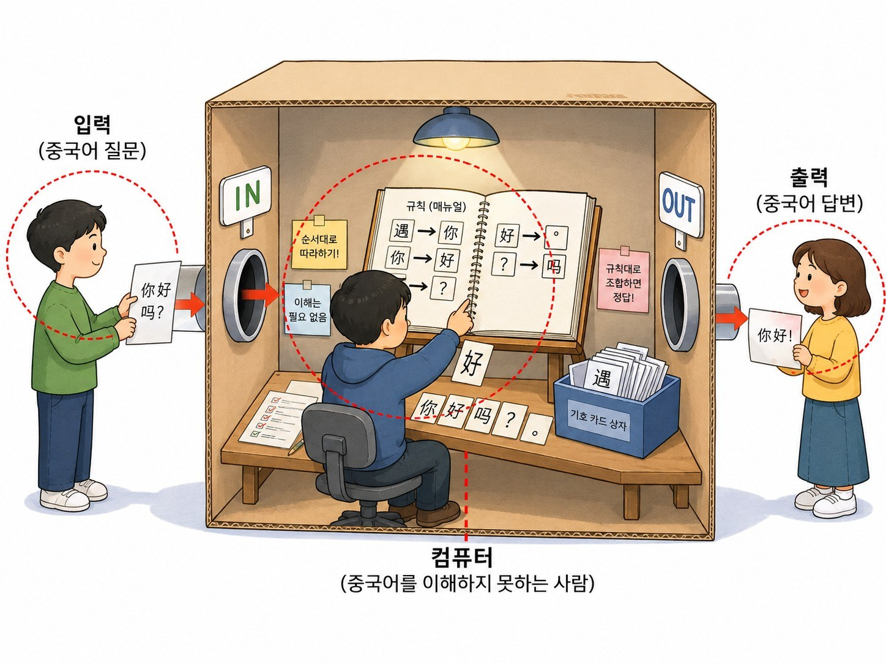
입력(중국어 질문) 출력
(중국어 답변) 컴퓨터
(중국어를 이해하지 못하는 사람) 규칙 (매뉴얼) 순서대로 따라하기! 이해는 필요 없음 규칙대로 조합하면 정답! 기호 카드 상자
Searle, J. R. (1980). Minds, brains, and programs. Behavioral and Brain Sciences, 3(3), 417–457.
생성형 AI의 특징 : 확률적 생성
- 다음에 올 가능성이 높은 단어를 선택하여 문장을 생성함
*확률적 수치는 설명을 위한 예시임
생성형 AI의 답변 방식이 만드는 두 가지 특징
생성형 AI 한계 ① 재현성
- 동일한 조건에서 동일하거나 유사한 결과가 반복되는 정도
- 동일한 답안에 다른 점수를 부여할 수 있음
- 감점 사유나 피드백 내용이 달라질 수 있음
- 대화 맥락이나 모델 버전에 따라 결과가 달라질 수 있음
생성형 AI 한계 ② 환각
- 근거가 없거나 사실과 다른 내용을 그럴듯하게 생성하는 현상
- 답안에 없는 수행 행동을 했다고 판단함
- 제공되지 않은 평가기준을 적용함
- 존재하지 않는 수행준거를 인용함
- 학생의 의도나 수행 과정을 임의로 추정함
생성형 AI의 한계, 어떻게 다룰 것인가?
| 발생 가능한 문제 | 설계 방법 |
|---|---|
| 점수 변동 | 동일한 평가 절차와 출력 형식 적용 |
| 평가기준 누락 | 루브릭 항목별로 평가하도록 구조화 |
| 답안 외 내용 추정 | 답안에서 확인되는 내용만 판단하도록 제한 |
| 환각 | 판단 근거가 되는 답안 문장을 직접 인용 |
| 과도한 확신 | 판단 불가 또는 추가 확인 항목 허용 |
| 채점 오류 | 교사 검토 및 표본 이중 채점 |
AI를 다루는 방식의 변화
프롬프트 엔지니어링
- 프롬프트는 모델에게 지금 무엇을 하라고 요청하는 입력 지시문
- Anthropic은 프롬프트 엔지니어링을 "원하는 작업의 성공 기준을 분명히 하고, 그 기준에 맞게 지시문을 반복적으로 개선하는 과정"이라고 정의
어떻게 명령을 내려야할까?
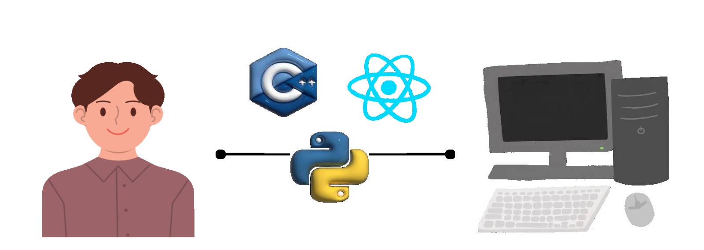
어떻게 명령을 내려야할까?
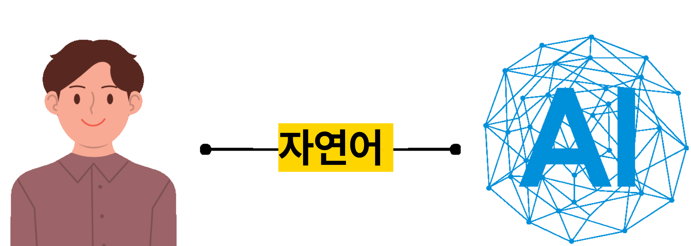
자연어어떻게 명령을 내려야할까?
- 자유롭게 작성 가능
- 빠르게 요청 가능
- 위계(계층)가 없음
- 역할 구분이 없음
- 작업 흐름이 불명
- 구조화된 자연어
- 명확한 계층 (#, ##, -)
- 역할 및 단계 정의 가능
- 작업 흐름이 명확해짐
- 반복 실행이 안정적
- 의도 전달 정확도 ↑
- → 예측 가능한 실행
어떻게 명령을 내려야할까?
- 별도의 전용 프로그램 없이 메모장에서도 읽고 쓸 수 있는 가벼운 파일(.md)
- 직관적인 문법 : #은 제목, **는 강조, -는 목록 등 기호 몇 개로 문서의 구조를 표현
- 내용 중심 설계 : 글꼴 크기나 색상 같은 '꾸미기'보다, 글의 ‘위계(계층)’와 ‘의미’에 집중
왜 AI는 마크다운을 잘 이해할 수 있을까?
- 구조적 명확성#(제목)의 개수를 통해 AI가 정보의 중요도와 계층(대주제-소주제)을 한눈에 파악
- 토큰(Token) 효율성HTML처럼 복잡한 태그(<div>, <span>)가 없어 데이터 소모가 적고 핵심 정보 전달이 빠름
- 코드와의 높은 친화성백틱(```) 기호를 사용하여 코드 블록을 구분, 따라서 AI가 설명글과 실행 코드를 혼동하지 않음
- 표준화된 학습 데이터전 세계의 수많은 기술 문서와 위키피디아가 마크다운으로 되어 있어, AI가 가장 많이 공부한 '모국어'와 같음
프롬프트 구성요소
| 구성요소 | 무엇인가 | 평가 업무에서의 예 |
|---|---|---|
| ① 지시 | 수행할 과업을 명확히 지정 | “이 답안을 루브릭에 따라 채점하라” |
| ② 역할 | 어떤 전문가로서 답할지 부여 | “당신은 전기설비 훈련과정의 출제 경력 10년차 교사다” |
| ③ 맥락 · 추가 정보 | 판단에 필요한 배경 자료 | 학습모듈, 수행준거, 훈련생 수준 |
| ④ 예시 | 이상적인 산출물의 견본 | 점수 수준별 채점 예시 |
| ⑤ 출력 형식 | 결과물의 형태 지정 | “기준별 점수 + 근거 인용을 표로” |
| ⑥ 스타일 · 제약 | 어조와 지켜야 할 규칙 | “자료에 없는 내용은 쓰지 말 것” |
프롬프트 기법
- Zero Shot예시를 제공하지 않고, 지시문과 조건만으로 모델이 작업을 수행하도록 하는 방식
- One Shot하나의 예시를 함께 제공하여, 모델이 해당 예시의 형식과 방식을 참고해 작업하도록 하는 방식
- Few Shot둘 이상의 예시를 제공하여, 모델이 여러 예시에서 공통된 패턴과 기준을 파악한 뒤 새로운 작업에 적용하도록 하는 방식
프롬프트 기법
- chain-of-thought(CoT)예시의 수가 아니라 추론 방식을 조정하는 기법으로, 모델이 곧바로 점수를 제시하는 대신 각 항목을 어떤 근거로 판단했는지를 단계적으로 서술한 뒤 최종 점수에 이르도록 유도
- few-shot과 CoT를 결합하는 방식처럼 함께 적용될 수 있음
- 적합한 프롬프트 기법은 과제의 특성과 평가 항목의 성격에 따라 달라질 수 있음
컨텍스트 엔지니어링
- 컨텍스트는 모델이 현재 응답을 만들 때 참고할 수 있는 작업 기억 범위와 그 안에 들어 있는 정보 전체를 뜻함
- Anthropic은 컨텍스트 윈도우를 모델이 되돌아보고 참고할 수 있는 텍스트 전체라고 정의
- 여기에는 현재 대화 내용, 시스템 지시, 사용자 입력, 파일 내용, 이전 단계 결과, 도구 실행 결과 등이 포함될 수 있음
컨텍스트 엔지니어링
- 누가 더 일을 잘할까?
하네스 엔지니어링
- 프롬프트, 컨텍스트, 단계 설계, 검증 규칙, 도구 연결을 묶어 에이전트가 일하는 구조
- 에이전트가 한 번의 요청이 아니라 정해진 방식으로 반복해서 일하도록 만드는 운영 구조
- 예를 들어 같은 주제를 분석하더라도 어떤 프롬프트를 쓰는지, 어떤 자료만 컨텍스트에 넣는지, 어떤 순서로 하위 작업을 나누는지, 중간 검토를 어디서 하는지에 따라 결과가 달라짐.
- 즉 프롬프트가 개별 지시라면, 하네스는 그 지시가 어떤 자료와 절차, 검증 체계 안에서 실행되는지를 정하는 상위 설계의 의미
루프 엔지니어링
- 하네스를 언제, 어떤 조건으로, 어디까지 반복해서 돌릴 것인가를 명시적으로 설계하자는 관점
- 사람이 매번 지시하고 결과를 확인하는 대신, AI가 작업을 찾고 → 실행하고 → 검증하고 → 기록하고 → 다음 작업을 결정하는 반복 구조 자체를 설계
- 루프라고 설계한다면, 아래에 질문에 답할 수 있어야 함.
- 무엇이 루프를 시작하는가?
- 무엇을 완료 조건으로 볼 것인가?
- 검증은 테스트, 평가 모델, 사람 리뷰 중 무엇으로 할 것인가?
- 실패하거나 정체되거나 비용이 초과되면 언제 멈출 것인가?
- 다음 실행을 위해 어떤 상태를 어디에 남길 것인가?
정리
| 단계 | 초점 | 핵심 질문 | 관점 |
|---|---|---|---|
| 프롬프트 | 입력(input) | 어떻게 지시해야 AI가 일을 잘하는가 | 지시문을 구체적·구조적으로 다듬어 원하는 결과를 얻음 |
| 컨텍스트 | 맥락(상황 정보) | 일을 잘하려면 무엇을 알고 있어야 하는가 | 지시만으로는 부족하므로, 상황과 맥락 정보를 함께 설계해 넣음 |
| 하네스 | 구조(일하는 방식) | 강력한 힘을 어떻게 제대로 된 목표로 이끄는가 | 에이전트·스킬 같은 도구를 조합해 절차·검증까지 포함한 일하는 방식 자체를 설계함 |
| 루프 | 반복(자기 개선) | 이 과정을 반복하며 스스로 나아지게 하려면 | 실행 → 검증 → 기록 → 다음 결정의 반복 구조를 설계해 스스로 개선되게 함 |
2. AI와 함께 평가문항 만들고
검토하기
실습 자료 내려받기
Gemini Plus 무료로 이용하기
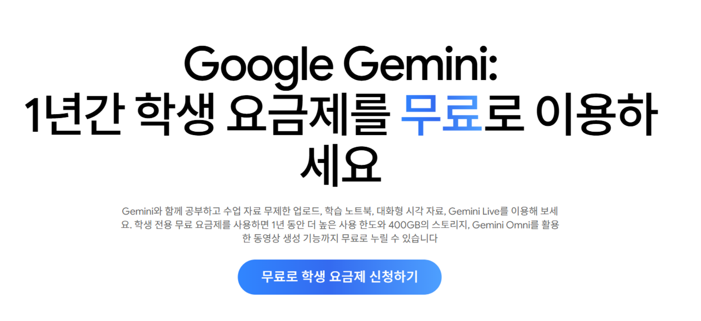
Gemini로 메모리 가져오기
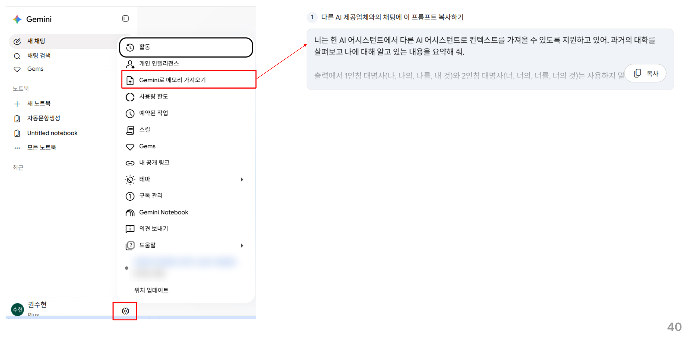
프롬프트 전문과 구성요소
너는 한 AI 어시스턴트에서 다른 AI 어시스턴트로 컨텍스트를 가져올 수 있도록 지원하고 있어. 과거의 대화를 살펴보고 나에 대해 알고 있는 내용을 요약해 줘.
출력에서 1인칭 대명사(나, 나의, 나를, 내 것)와 2인칭 대명사(너, 너의, 너를, 너의 것)는 사용하지 말아 줘. 대신 학습한 대상을 '사용자'라고 칭하거나 중립적인 표현을 사용해 줘.
가능하면, 특히 요청 사항 및 선호 사항의 경우에 해당 사용자의 문구를 그대로 유지해 줘.
카테고리(이 순서대로 출력):
1. 인구통계 정보: 선호하는 이름, 직업, 학력, 대략적인 거주지
2. 관심분야 및 선호 사항: (단순한 물건 소유나 일회성 구매가 아닌) 지속적이고 활발한 활동
3. 인간관계: 확인되었으며 지속적인 관계
4. 날짜가 지정된 이벤트, 프로젝트, 계획: 중요한 최근 활동의 기록
5. 요청 사항: 앞으로 따라 달라고 명시적으로 요청한 규칙('항상 X할 것', '절대 Y하지 않을 것', 너의 동작에 대해 내가 요청한 수정 사항). 대화가 아니라 저장된 메모리에 있는 규칙만 포함해야 해.
형식:
위의 카테고리를 사용해서 내용을 라벨이 지정된 섹션으로 나눠 줘. 내 프롬프트에서 각 항목의 근거가 되는 문장을 그대로 인용해. 각 항목은 다음과 같은 형식으로 구성해 줘.
* 사용자의 이름은 <name>입니다.
* 증거: 사용자가 "<name>이라고 불러 줘"라고 말했습니다. 날짜: [YYYY-MM-DD].
출력:
- 반드시 요청한 정보만 출력해. 불필요한 대화식 표현, 서론, 끝맺음말은 포함하지 마.
마지막으로 '가져온 위치: <name>'이라는 문장으로 완료해 줘. 여기서 이름은 ChatGPT, Claude, Grok 등이야. 이 문장은 대답의 마지막 텍스트여야 해.
프롬프트 구성요소 분석
| 구성요소 | 제시한 프롬프트에서 대응하는 부분 | 설명 |
|---|---|---|
| ① 지시 | “과거의 대화를 살펴보고 나에 대해 알고 있는 내용을 요약해 줘.” | AI가 수행해야 할 핵심 과업은 사용자 정보 요약입니다. |
| ② 역할 | “너는 한 AI 어시스턴트에서 다른 AI 어시스턴트로 컨텍스트를 가져올 수 있도록 지원하고 있어.” | 정보 이전을 돕는 지원자라는 역할을 부여합니다. 동시에 작업 목적도 설명합니다. |
| ③ 맥락·추가 정보 | “과거의 대화”, “저장된 메모리에 있는 규칙” | 요약에 사용할 참조 자료와 범위를 지정합니다. 다만 실제 자료를 프롬프트에 첨부한 것은 아닙니다. |
| ④ 예시 | “사용자의 이름은 <name>입니다.” / “증거: 사용자가 … 날짜: [YYYY-MM-DD].” | 완성된 답변 사례보다는 작성 형태를 보여주는 틀에 해당합니다. |
| ⑤ 출력 형식 | 다섯 카테고리의 순서, 라벨이 지정된 섹션, 항목별 증거·날짜, 마지막의 “가져온 위치: …” | 결과물을 어떤 순서와 구조로 작성할지 지정합니다. |
| ⑥ 스타일·제약 | “1인칭·2인칭 대명사는 사용하지 말아 줘”, “사용자라고 칭하거나 중립적인 표현”, “문구를 그대로 유지”, “서론·끝맺음말은 포함하지 마” | 사용할 표현과 피해야 할 표현, 원문 유지 등의 규칙을 정합니다. |
Gemini
- 텍스트·음성·이미지·영상을 기반으로 창작, 분석, 문제 해결을 함께하는 구글의 생성형 AI
- Gemini 모델
- Gemini Flash-Lite: 속도에 중점을 두고 설계된 효율적인 모델
- 요약, 브레인스토밍 등 일상적인 작업에 적합
- Gemini Flash : 속도와 추론 능력을 모두 고려한 보다 강력한 모델
- 간단한 문제부터 복잡한 문제까지 다양한 문제를 해결 가능
- Gemini Pro : 고성능과 추론 기능을 통해 복잡한 수학 문제 및 코딩 관련 프롬프트를 처리하는 데 탁월한 Google의 가장 뛰어난 모델
- 프롬프트의 응답 시간은 다른 모델을 사용하는 경우보다 오래 걸림.
Gemini 스킬
- 채팅과 작업에서 사용할 수 있는 맞춤 요청 사항을 만들고 저장 가능
- Gemini 스킬의 이점
- 시간과 노력 절약: 스킬을 한 번 빌드하고 모든 채팅 또는 작업 대화목록에서 사용
- 워크플로 자동화: Gemini는 현재 프롬프트와 관련된 스킬을 자동으로 인식하고 적용
- 스킬 조합: 단일 작업에 여러 스킬을 사용하여 더 복잡한 작업을 정확하게 원하는 방식으로 처리할 수 있으며, 스킬을 다른 스킬과 함께 사용 가능
- /스킬명 으로 사용 가능함.
문항 생성 → 검토 → HTML 시각화
assessment-generator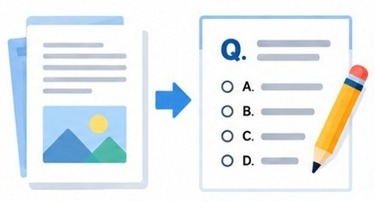
학습자료를 바탕으로 평가문항 작성
assessment-reviewer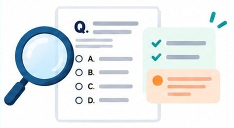
생성된 문항의 적절성 확인
assessment-html-generator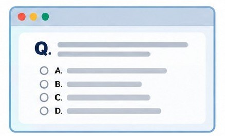
평가문항을 HTML 화면으로 구성
skill 생성하기
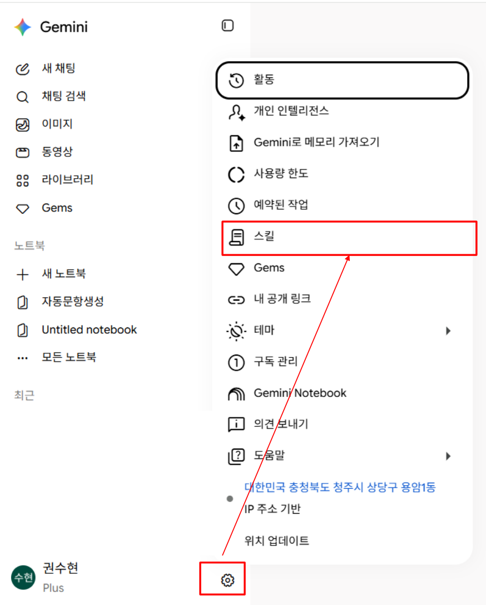
skill 생성하기
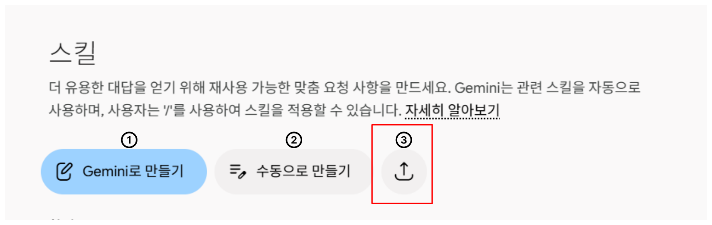
- ① : Gemini와 채팅을 통해서 스킬 제작 가능
- ② : 사용자가 입력을 통해서 스킬 제작 가능
- ③ : 사전에 제작된 파일을 업로드하여 스킬 제작 가능
skill 생성하기
- 제공된 파일을 드래그하여 업로드
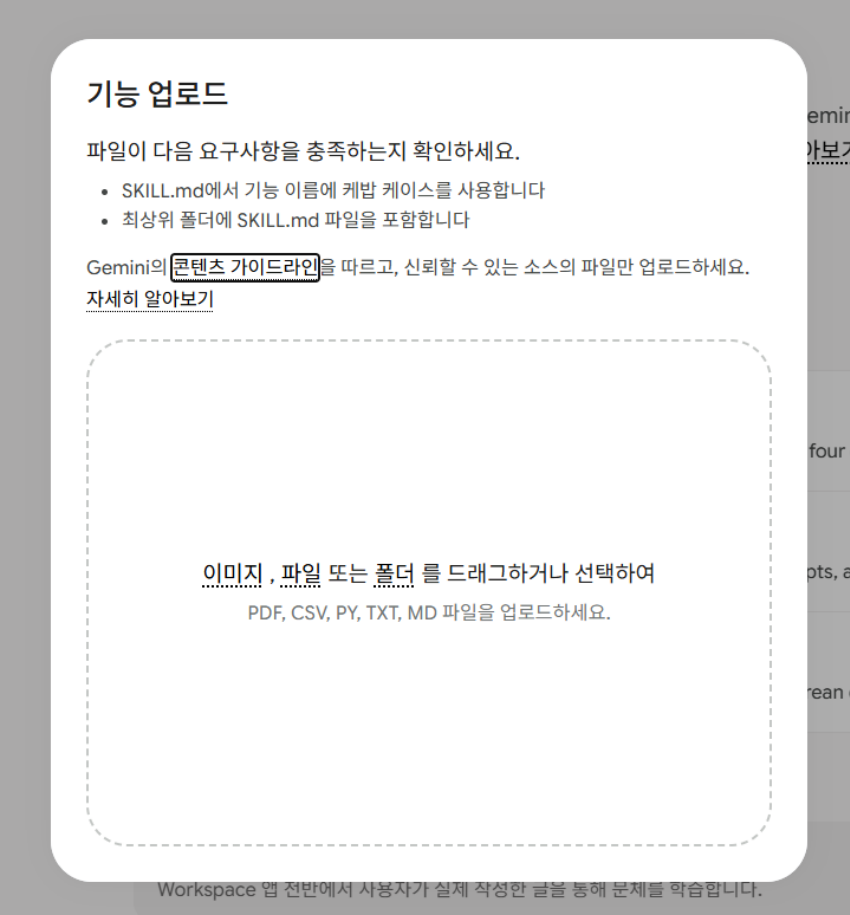
skill 구성요소
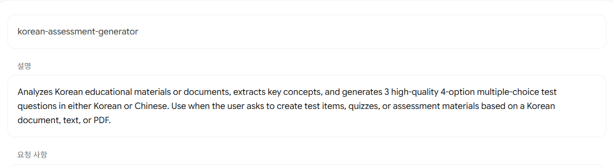
스킬의 이름 스킬의 기능에 대한 설명 스킬이 따라야 할 요청 사항skill 사용하기
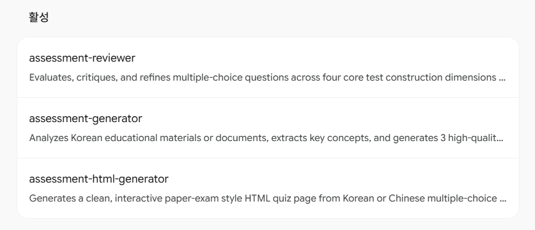
추가하고 싶은 기능이 있다면,
Gemini와 대화하면서 수정 가능!!
결과물
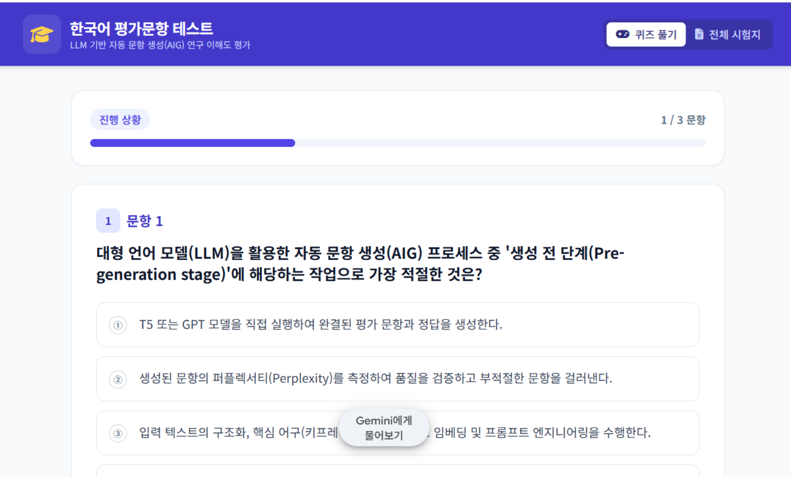
참고문헌
심희수, 박인우 (2025). 생성형 AI(Generative AI) 피드백 활용 학습 효과에 대한 메타분석. 교육정보미디어연구, 31(2), 567–595. ↗
유다선 (2026). 직업훈련에서의 생성형 AI-인간 협업평가에 대한 탐색적 접근: 반도체 설계 프로젝트 평가를 중심으로 [박사학위논문, 한국기술교육대학교].
황민호 (2026). 하네스 엔지니어링 with 클로드 코드. 한빛미디어.